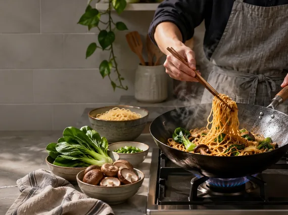
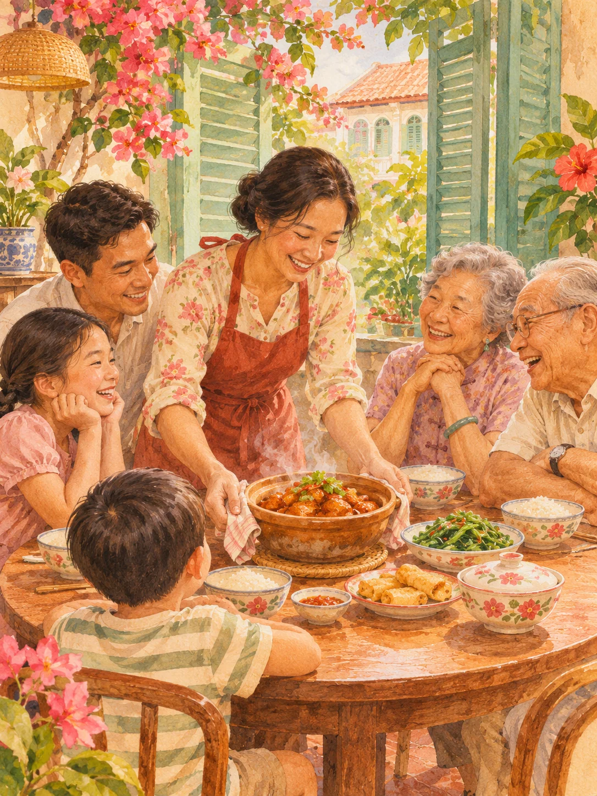

Weeknight supper
Put a wok on the hob. MILI’s canned vegetables and sauces are a starting point for a quick dinner.
Explore MILIGoh Joo Hin in Singapore
Choose an occasion and find its place at the table.
Find a weeknight supper

Put a wok on the hob. MILI’s canned vegetables and sauces are a starting point for a quick dinner.
Explore MILI
Make room in the middle of the table. New Moon’s abalone, shellfish and soups lend themselves to sharing.
Explore New Moon
Take the shady seat. GOGO’s drinks and potong ice cream suit the quiet stretch between lunch and dinner.
Explore GOGO